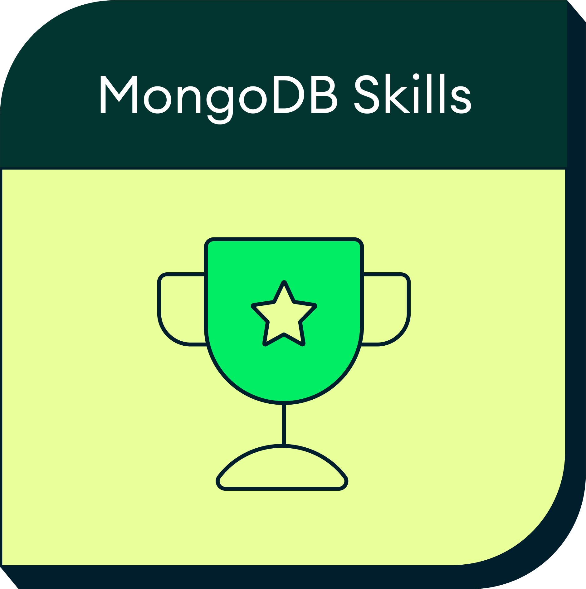

HACKTOBERFEST 2026 · LIVE WALKTHROUGH
Powered by MongoDB
A personal AI assistant
that remembers,
using open-weight models
and MongoDB.
Streamed chat and one web-search tool.
Conversations that survive a restart.
User-owned memory across threads.
Extract facts. Recall useful context.
Manage duplicates and changed facts.
Inspired by my Claude-style Claudius project.
One model: gpt-oss-120b.
Chat and memory extraction.
DigitalOcean Serverless Inference.
Next.js + React + TypeScript.
LangGraph orchestrates the agent.
Tavily supplies web search.
Documents + MongoDBSaver.
Atlas Vector Search.
Automated Embedding: voyage-4.
The LLM interprets a goal,
plans the next step, and
chooses a tool when needed.
Callable functions let the
agent retrieve data and
act on external systems.
Conversation context and
durable facts help the agent
respond with continuity.
Known steps?
Use a fixed workflow.
Check for a booking number:
a predictable validation rule.
Non-deterministic Workflow?
Consider an agent.
Resolve a refund request:
inspect the account, evaluate
policy, then take approved actions.
Consequential actions need permissions,
validation, and approval boundaries.
Answer questions.
Find current information.
Personalize responses.
Current conversation.
User-owned facts.
External search results.
Web search in this app.
APIs, database queries, and
vector retrieval in other agents.
Model around
how the app
reads and writes.
Thread list reads conversation headers
Owner, title, timestamps, watermark.
From the conversations collection.
Current thread reads checkpoint messages
Messages live with the agent state.
No second authoritative transcript.
At start: checkpoints stay in memory.
Step 1: persist them in MongoDB.
Schema-flexible is not schemaless.
Zod validates application boundaries.
Not just a prompt. State, decisions, and a tool-result loop.
The LLM selects a callable function. Application code executes it.
The server supplies history; the browser sends only the new message.
Streaming makes both answer text and tool activity visible.
LIVE DEMO · THE STARTING APP
Stream a conversation. Search the web.
See the data model and graph in action.
MongoDBSaver stores
LangGraph checkpoints.
A stable thread ID restores state.
Documents hold facts, owners,
importance, and lineage.
Normal queries load a profile.
Atlas Automated Embedding
uses Voyage voyage-4.
Vector Search finds relevant facts.
Short-term memory:
this conversation.
Long-term memory:
useful facts across
conversations.
Short-term: retrieve ordered turns
for the correct session ID.
This app restores checkpoint state
using a stable thread_id.
Long-term: retrieve user-owned
facts for future personalization.
Storage lifetime is not memory scope.
A durable transcript is still thread context.
new MongoDBSaver({
client: await getClient(),
dbName: DATABASE_NAME,
});
builder.compile({ checkpointer });Restart the app.
Restore the conversation.
Read new human and assistant text.
Exclude tool calls and results.
Validate durable facts.
Store owner and source.
Advance the extraction watermark.
{
"content": "I am learning pottery",
"category": "interest",
"status": "active"
}$vectorSearch: {
index: "memories_vector",
path: "content",
query: { text: human },
numCandidates: 100,
limit: 10,
filter: {
userId: { $eq: owner },
status: { $eq: "active" },
},
}Profile queries:
important facts.
Vector Search:
relevant facts.
Load top active memories
with an indexed document query.
Search meaning using
the last three human turns.
De-duplicate the combined context.
If recall fails, keep chat working.
The profile path does not wait for embeddings.
Both paths filter by the current owner.
New fact → insert.
Duplicate fact → skip.
Changed fact → supersede.
Old: I live in Toronto
status: superseded
supersededBy → new record
New: I live in Montréal
status: active
supersedes → old recordSend a message.
Restart the server.
Reopen the same conversation.
State a durable fact.
Start a fresh conversation.
Ask a related question.
Switch to another persona.
Confirm memories stay separate.
Update a fact and inspect its history.
Reasoning + tools + memory.
Identify tasks, data, and tools.
Use fixed rules for fixed steps.
The LLM chooses the next action.
Code executes API and data tools.
A cyclical graph can loop.
Ordered turns for a session.
Durable facts across sessions.
Owner-filtered personal context.

mdb.link/hacktoberfest-2026-badgeHACKTOBERFEST 2026
Néstor Daza · extensa.io